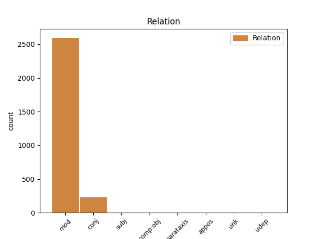
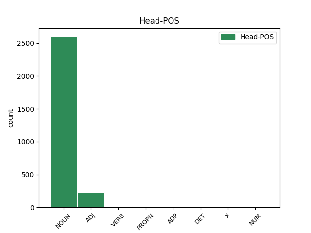
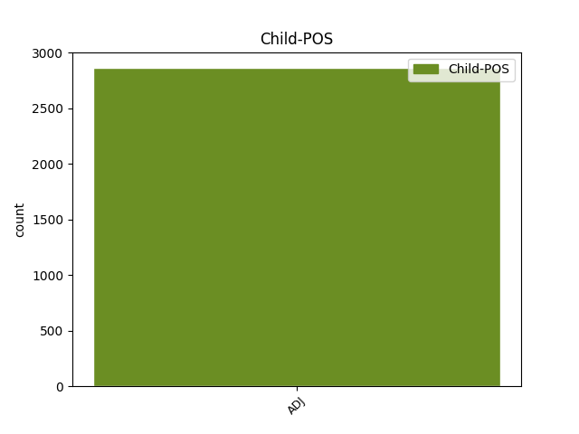

Distribution of features within this leaf



Agreement Rules sorted by frequency.
When the head token is NOUN and the dependent token is ADJ.
1 23 _ _ _ _ 0 _ _ _
2 . _ _ _ _ 0 _ _ _
3 Kalendoriniams _ _ _ _ 0 _ _ _
4 metams _ _ _ _ 0 _ _ _
5 pasibaigus _ _ _ _ 0 _ _ _
6 , _ _ _ _ 0 _ _ _
7 Komiteto _ _ _ _ 0 _ _ _
8 sekretorius _ _ _ _ 0 _ _ _
9 turimus _ _ _ _ 0 _ _ _
10 dokumentus _ _ _ _ 0 _ _ _
11 , _ _ _ _ 0 _ _ _
12 susijusius _ _ _ _ 0 _ _ _
13 su _ _ _ _ 0 _ _ _
14 Komiteto _ _ _ _ 0 _ _ _
15 posėdžiais _ _ _ _ 0 _ _ _
16 , _ _ _ _ 0 _ _ _
17 perduoda _ _ _ _ 0 _ _ _
18 saugoti _ _ _ _ 0 _ _ _
19 Aplinkos _ _ _ _ 0 _ _ _
20 ministerijai _ _ _ _ 0 _ _ _
21 , _ _ _ _ 0 _ _ _
22 kur _ _ _ _ 0 _ _ _
23 jie _ _ _ _ 0 _ _ _
24 saugomi _ _ _ _ 0 _ _ _
25 5 _ _ _ _ 0 _ _ _
26 metus _ _ _ _ 0 _ _ _
27 , _ _ _ _ 0 _ _ _
28 vadovaujantis _ _ _ _ 0 _ _ _
29 Lietuvos _ _ _ _ 0 _ _ _
30 archyvų _ _ _ _ 0 _ _ _
31 departamento _ _ _ _ 0 _ _ _
32 prie _ _ _ _ 0 _ _ _
33 Lietuvos _ _ _ _ 0 _ _ _
34 Respublikos _ _ _ _ 0 _ _ _
35 Vyriausybės _ _ _ _ 0 _ _ _
36 1997 _ _ _ _ 0 _ _ _
37 m _ _ _ _ 0 _ _ _
38 . _ _ _ _ 0 _ _ _
39 rugpjūčio _ _ _ _ 0 _ _ _
40 15 _ _ _ _ 0 _ _ _
41 d _ _ _ _ 0 _ _ _
42 . _ _ _ _ 0 _ _ _
43 įsakymu _ _ _ _ 0 _ _ _
44 Nr _ _ _ _ 0 _ _ _
45 . _ _ _ _ 0 _ _ _
46 38 _ _ _ _ 0 _ _ _
47 „ _ _ _ _ 0 _ _ _
48 Dėl _ _ _ _ 0 _ _ _
49 bendrųjų bendras ADJ bdv.nelygin.įvardž.vyr.dgs.K. Case=Gen|Definite=Def|Degree=Pos|Gender=Masc|Number=Plur 52 mod _ _
50 dokumentų _ _ _ _ 0 _ _ _
51 saugojimo _ _ _ _ 0 _ _ _
52 terminų terminas NOUN dkt.vyr.dgs.K. Case=Gen|Gender=Masc|Number=Plur 0 _ _ _
53 “ _ _ _ _ 0 _ _ _
54 ( _ _ _ _ 0 _ _ _
55 Žin _ _ _ _ 0 _ _ _
56 . _ _ _ _ 0 _ _ _
57 , _ _ _ _ 0 _ _ _
58 1997 _ _ _ _ 0 _ _ _
59 , _ _ _ _ 0 _ _ _
60 Nr _ _ _ _ 0 _ _ _
61 . _ _ _ _ 0 _ _ _
62 78-006 _ _ _ _ 0 _ _ _
63 ) _ _ _ _ 0 _ _ _
64 . _ _ _ _ 0 _ _ _
When the head token is ADJ and the dependent token is ADJ.
1 13 _ _ _ _ 0 _ _ _
2 . _ _ _ _ 0 _ _ _
3 Į _ _ _ _ 0 _ _ _
4 Komiteto _ _ _ _ 0 _ _ _
5 posėdžius _ _ _ _ 0 _ _ _
6 gali _ _ _ _ 0 _ _ _
7 būti _ _ _ _ 0 _ _ _
8 kviečiami _ _ _ _ 0 _ _ _
9 Aplinkos _ _ _ _ 0 _ _ _
10 ministerijos _ _ _ _ 0 _ _ _
11 , _ _ _ _ 0 _ _ _
12 jai _ _ _ _ 0 _ _ _
13 pavaldžių _ _ _ _ 0 _ _ _
14 ar _ _ _ _ 0 _ _ _
15 jos _ _ _ _ 0 _ _ _
16 reguliavimo _ _ _ _ 0 _ _ _
17 sričiai _ _ _ _ 0 _ _ _
18 priskirtų _ _ _ _ 0 _ _ _
19 institucijų _ _ _ _ 0 _ _ _
20 ir _ _ _ _ 0 _ _ _
21 organizacijų _ _ _ _ 0 _ _ _
22 specialistai _ _ _ _ 0 _ _ _
23 , _ _ _ _ 0 _ _ _
24 kitų _ _ _ _ 0 _ _ _
25 valstybės _ _ _ _ 0 _ _ _
26 ir _ _ _ _ 0 _ _ _
27 vietos _ _ _ _ 0 _ _ _
28 savivaldos _ _ _ _ 0 _ _ _
29 institucijų _ _ _ _ 0 _ _ _
30 pareigūnai _ _ _ _ 0 _ _ _
31 , _ _ _ _ 0 _ _ _
32 nepriklausomi _ _ _ _ 0 _ _ _
33 ekspertai _ _ _ _ 0 _ _ _
34 , _ _ _ _ 0 _ _ _
35 visuomeninių visuomeninis ADJ bdv.nelygin.mot.dgs.K. Case=Gen|Definite=Ind|Degree=Pos|Gender=Fem|Number=Plur 0 _ _ _
36 ir _ _ _ _ 0 _ _ _
37 nevyriausybinių nevyriausybinis ADJ bdv.nelygin.mot.dgs.K. Case=Gen|Definite=Ind|Degree=Pos|Gender=Fem|Number=Plur 35 conj _ _
38 organizacijų _ _ _ _ 0 _ _ _
39 atstovai _ _ _ _ 0 _ _ _
40 . _ _ _ _ 0 _ _ _
When the head token is VERB and the dependent token is ADJ.
1 2 _ _ _ _ 0 _ _ _
2 . _ _ _ _ 0 _ _ _
3 Verslininkui _ _ _ _ 0 _ _ _
4 , _ _ _ _ 0 _ _ _
5 neturinčiam _ _ _ _ 0 _ _ _
6 įmonių _ _ _ _ 0 _ _ _
7 akcijų _ _ _ _ 0 _ _ _
8 , _ _ _ _ 0 _ _ _
9 pajų _ _ _ _ 0 _ _ _
10 ar _ _ _ _ 0 _ _ _
11 kitokių _ _ _ _ 0 _ _ _
12 dalyvavimą _ _ _ _ 0 _ _ _
13 įmonės _ _ _ _ 0 _ _ _
14 kapitale _ _ _ _ 0 _ _ _
15 žyminčių _ _ _ _ 0 _ _ _
16 kapitalo _ _ _ _ 0 _ _ _
17 dalių _ _ _ _ 0 _ _ _
18 arba _ _ _ _ 0 _ _ _
19 turinčiam _ _ _ _ 0 _ _ _
20 jų _ _ _ _ 0 _ _ _
21 mažiau _ _ _ _ 0 _ _ _
22 negu _ _ _ _ 0 _ _ _
23 25 _ _ _ _ 0 _ _ _
24 procentus _ _ _ _ 0 _ _ _
25 , _ _ _ _ 0 _ _ _
26 darbuotojų _ _ _ _ 0 _ _ _
27 skaičius _ _ _ _ 0 _ _ _
28 apskaičiuojamas apskaičiuoti VERB vksm.dlv.neveik.es.vyr.vns.V. Case=Nom|Definite=Ind|Gender=Masc|Number=Sing|Polarity=Pos|Tense=Pres|VerbForm=Part|Voice=Pass 0 _ _ _
29 prie _ _ _ _ 0 _ _ _
30 vieneto _ _ _ _ 0 _ _ _
31 ( _ _ _ _ 0 _ _ _
32 verslininkas _ _ _ _ 0 _ _ _
33 ) _ _ _ _ 0 _ _ _
34 pridedant _ _ _ _ 0 _ _ _
35 verslininko _ _ _ _ 0 _ _ _
36 samdomų _ _ _ _ 0 _ _ _
37 darbuotojų _ _ _ _ 0 _ _ _
38 skaičių _ _ _ _ 0 _ _ _
39 , _ _ _ _ 0 _ _ _
40 balanse _ _ _ _ 0 _ _ _
41 nurodyto _ _ _ _ 0 _ _ _
42 turto _ _ _ _ 0 _ _ _
43 vertė _ _ _ _ 0 _ _ _
44 lygi lygus ADJ bdv.nelygin.mot.vns.V. Case=Nom|Definite=Ind|Degree=Pos|Gender=Fem|Number=Sing 28 conj _ _
45 nuliui _ _ _ _ 0 _ _ _
46 , _ _ _ _ 0 _ _ _
47 o _ _ _ _ 0 _ _ _
48 metinės _ _ _ _ 0 _ _ _
49 pajamos _ _ _ _ 0 _ _ _
50 – _ _ _ _ 0 _ _ _
51 šio _ _ _ _ 0 _ _ _
52 verslininko _ _ _ _ 0 _ _ _
53 metinėms _ _ _ _ 0 _ _ _
54 pajamoms _ _ _ _ 0 _ _ _
55 , _ _ _ _ 0 _ _ _
56 nurodytoms _ _ _ _ 0 _ _ _
57 finansiniuose _ _ _ _ 0 _ _ _
58 dokumentuose _ _ _ _ 0 _ _ _
59 . _ _ _ _ 0 _ _ _
When the head token is ADP and the dependent token is ADJ.
1 Jis _ _ _ _ 0 _ _ _
2 gali _ _ _ _ 0 _ _ _
3 būti _ _ _ _ 0 _ _ _
4 naudingas _ _ _ _ 0 _ _ _
5 , _ _ _ _ 0 _ _ _
6 nes _ _ _ _ 0 _ _ _
7 skatina _ _ _ _ 0 _ _ _
8 veikti _ _ _ _ 0 _ _ _
9 , _ _ _ _ 0 _ _ _
10 siekti _ _ _ _ 0 _ _ _
11 tikslo _ _ _ _ 0 _ _ _
12 , _ _ _ _ 0 _ _ _
13 padeda _ _ _ _ 0 _ _ _
14 mobilizuoti _ _ _ _ 0 _ _ _
15 savo _ _ _ _ 0 _ _ _
16 fizines _ _ _ _ 0 _ _ _
17 ir _ _ _ _ 0 _ _ _
18 psichines _ _ _ _ 0 _ _ _
19 jėgas _ _ _ _ 0 _ _ _
20 ir _ _ _ _ 0 _ _ _
21 iš iš ADP prl.K. AdpType=Prep|Case=Gen 0 _ _ _
22 neįmanomo neįmanomas ADJ bdv.nelygin.vyr.vns.K. Case=Gen|Definite=Ind|Degree=Pos|Gender=Masc|Number=Sing 21 comp:obj _ _
23 padaryti _ _ _ _ 0 _ _ _
24 įmanoma _ _ _ _ 0 _ _ _
25 . _ _ _ _ 0 _ _ _
When the head token is PROPN and the dependent token is ADJ.
1 Vytauto Vytautas PROPN dkt.tikr.vyr.vns.K. Case=Gen|Gender=Masc|Number=Sing 0 _ _ _
2 Didžiojo didis ADJ bdv.nelygin.įvardž.vyr.vns.K. Case=Gen|Definite=Def|Degree=Pos|Gender=Masc|Number=Sing 1 mod _ _
3 universitetas _ _ _ _ 0 _ _ _
4 , _ _ _ _ 0 _ _ _
5 2007 _ _ _ _ 0 _ _ _
6 . _ _ _ _ 0 _ _ _
When the head token is DET and the dependent token is ADJ.
1 Verslui _ _ _ _ 0 _ _ _
2 nebegana _ _ _ _ 0 _ _ _
3 asmeninių _ _ _ _ 0 _ _ _
4 pasiekimų _ _ _ _ 0 _ _ _
5 ir _ _ _ _ 0 _ _ _
6 turtų _ _ _ _ 0 _ _ _
7 demonstravimo _ _ _ _ 0 _ _ _
8 , _ _ _ _ 0 _ _ _
9 jis _ _ _ _ 0 _ _ _
10 panoro _ _ _ _ 0 _ _ _
11 išaukštinti _ _ _ _ 0 _ _ _
12 save _ _ _ _ 0 _ _ _
13 kaip _ _ _ _ 0 _ _ _
14 in _ _ _ _ 0 _ _ _
15 corpore _ _ _ _ 0 _ _ _
16 prometėjišką _ _ _ _ 0 _ _ _
17 veiklą _ _ _ _ 0 _ _ _
18 , _ _ _ _ 0 _ _ _
19 kuri kuris DET įv.mot.vns.V. Case=Nom|Definite=Ind|Gender=Fem|Number=Sing|PronType=Int 0 _ _ _
20 vienintelė vienintelis ADJ bdv.nelygin.mot.vns.V. Case=Nom|Definite=Ind|Degree=Pos|Gender=Fem|Number=Sing 19 mod _ _
21 gali _ _ _ _ 0 _ _ _
22 suteikti _ _ _ _ 0 _ _ _
23 gėrį _ _ _ _ 0 _ _ _
24 ir _ _ _ _ 0 _ _ _
25 išganymą _ _ _ _ 0 _ _ _
26 šaliai _ _ _ _ 0 _ _ _
27 – _ _ _ _ 0 _ _ _
28 ką _ _ _ _ 0 _ _ _
29 ten _ _ _ _ 0 _ _ _
30 , _ _ _ _ 0 _ _ _
31 visai _ _ _ _ 0 _ _ _
32 žmonijai _ _ _ _ 0 _ _ _
33 . _ _ _ _ 0 _ _ _
When the head token is X and the dependent token is ADJ.
1 Vis _ _ _ _ 0 _ _ _
2 dėlto _ _ _ _ 0 _ _ _
3 sėkmingą _ _ _ _ 0 _ _ _
4 integraciją _ _ _ _ 0 _ _ _
5 į _ _ _ _ 0 _ _ _
6 Europos _ _ _ _ 0 _ _ _
7 Sąjungą _ _ _ _ 0 _ _ _
8 lydinti _ _ _ _ 0 _ _ _
9 didelė _ _ _ _ 0 _ _ _
10 emigracijos _ _ _ _ 0 _ _ _
11 banga _ _ _ _ 0 _ _ _
12 rodo _ _ _ _ 0 _ _ _
13 susilpnėjusį _ _ _ _ 0 _ _ _
14 Lietuvos _ _ _ _ 0 _ _ _
15 žmonių _ _ _ _ 0 _ _ _
16 kultūrinį _ _ _ _ 0 _ _ _
17 bendrumą _ _ _ _ 0 _ _ _
18 , _ _ _ _ 0 _ _ _
19 priklausomybę _ _ _ _ 0 _ _ _
20 Lietuvos _ _ _ _ 0 _ _ _
21 kultūros _ _ _ _ 0 _ _ _
22 erdvei _ _ _ _ 0 _ _ _
23 , _ _ _ _ 0 _ _ _
24 stiprėjantį _ _ _ _ 0 _ _ _
25 norą _ _ _ _ 0 _ _ _
26 pasinaudoti _ _ _ _ 0 _ _ _
27 judėjimo _ _ _ _ 0 _ _ _
28 laisve _ _ _ _ 0 _ _ _
29 ir _ _ _ _ 0 _ _ _
30 siekti _ _ _ _ 0 _ _ _
31 asmeninės _ _ _ _ 0 _ _ _
32 materialinės materialinis ADJ bdv.nelygin.mot.vns.K. Case=Gen|Definite=Ind|Degree=Pos|Gender=Fem|Number=Sing 33 mod _ _
33 naudos nauda X dktv.mot.vns.K. Case=Gen|Gender=Fem|Number=Sing 0 _ _ _
34 , _ _ _ _ 0 _ _ _
35 naujų _ _ _ _ 0 _ _ _
36 potyrių _ _ _ _ 0 _ _ _
37 . _ _ _ _ 0 _ _ _
When the head token is NUM and the dependent token is ADJ.
1 Mes _ _ _ _ 0 _ _ _
2 galime _ _ _ _ 0 _ _ _
3 į _ _ _ _ 0 _ _ _
4 bedugnę _ _ _ _ 0 _ _ _
5 kristi _ _ _ _ 0 _ _ _
6 pirmieji pirmas NUM sktv.raid.kelint.įvardž.vyr.dgs.V. Case=Nom|Definite=Def|Gender=Masc|Number=Plur|NumForm=Word|NumType=Ord 0 _ _ _
7 arba _ _ _ _ 0 _ _ _
8 paskutiniai paskutinis ADJ bdv.nelygin.vyr.dgs.V. Case=Nom|Definite=Ind|Degree=Pos|Gender=Masc|Number=Plur 6 conj _ _
9 ir _ _ _ _ 0 _ _ _
10 taip _ _ _ _ 0 _ _ _
11 pat _ _ _ _ 0 _ _ _
12 iš _ _ _ _ 0 _ _ _
13 jos _ _ _ _ 0 _ _ _
14 ropštis _ _ _ _ 0 _ _ _
15 . _ _ _ _ 0 _ _ _
Disagree Examples:
1 Tuo _ _ _ _ 0 _ _ _
2 metu _ _ _ _ 0 _ _ _
3 kiti _ _ _ _ 0 _ _ _
4 Lietuvos _ _ _ _ 0 _ _ _
5 sąjūdiečiai _ _ _ _ 0 _ _ _
6 istorijos _ _ _ _ 0 _ _ _
7 puslapiuose _ _ _ _ 0 _ _ _
8 aprašyti _ _ _ _ 0 _ _ _
9 , _ _ _ _ 0 _ _ _
10 kaip _ _ _ _ 0 _ _ _
11 beveidė _ _ _ _ 0 _ _ _
12 pasyvi _ _ _ _ 0 _ _ _
13 minia _ _ _ _ 0 _ _ _
14 , _ _ _ _ 0 _ _ _
15 kuri _ _ _ _ 0 _ _ _
16 su _ _ _ _ 0 _ _ _
17 dainomis _ _ _ _ 0 _ _ _
18 ir _ _ _ _ 0 _ _ _
19 vėliavomis _ _ _ _ 0 _ _ _
20 pasirodo _ _ _ _ 0 _ _ _
21 tik _ _ _ _ 0 _ _ _
22 masiniuose _ _ _ _ 0 _ _ _
23 renginiuose _ _ _ _ 0 _ _ _
24 , _ _ _ _ 0 _ _ _
25 visai _ _ _ _ 0 _ _ _
26 kaip _ _ _ _ 0 _ _ _
27 prastos _ _ _ _ 0 _ _ _
28 operetės _ _ _ _ 0 _ _ _
29 svečiai _ _ _ _ 0 _ _ _
30 , _ _ _ _ 0 _ _ _
31 išeinantys _ _ _ _ 0 _ _ _
32 į _ _ _ _ 0 _ _ _
33 teatro _ _ _ _ 0 _ _ _
34 sceną _ _ _ _ 0 _ _ _
35 paskutiniajame paskutinis ADJ bdv.nelygin.įvardž.vyr.vns.Vt. Case=Loc|Definite=Def|Degree=Pos|Gender=Masc|Number=Sing 36 mod _ _
36 spektaklio spektaklis NOUN dkt.vyr.vns.K. Case=Gen|Gender=Masc|Number=Sing 0 _ _ _
37 akte _ _ _ _ 0 _ _ _
38 per _ _ _ _ 0 _ _ _
39 vestuvių _ _ _ _ 0 _ _ _
40 puotą _ _ _ _ 0 _ _ _
41 . _ _ _ _ 0 _ _ _
1 Lankstų _ _ _ _ 0 _ _ _
2 konceptualųjį konceptualus ADJ bdv.nelygin.įvardž.vyr.vns.G. Case=Acc|Definite=Def|Degree=Pos|Gender=Masc|Number=Sing 3 mod _ _
3 tyrimo tyrimas NOUN dkt.vyr.vns.K. Case=Gen|Gender=Masc|Number=Sing 0 _ _ _
4 modelį _ _ _ _ 0 _ _ _
5 , _ _ _ _ 0 _ _ _
6 atrodytų _ _ _ _ 0 _ _ _
7 , _ _ _ _ 0 _ _ _
8 atitinka _ _ _ _ 0 _ _ _
9 ir _ _ _ _ 0 _ _ _
10 metodologija _ _ _ _ 0 _ _ _
11 , _ _ _ _ 0 _ _ _
12 štai _ _ _ _ 0 _ _ _
13 p _ _ _ _ 0 _ _ _
14 . _ _ _ _ 0 _ _ _
15 12 _ _ _ _ 0 _ _ _
16 teigiama _ _ _ _ 0 _ _ _
17 , _ _ _ _ 0 _ _ _
18 kad _ _ _ _ 0 _ _ _
19 „ _ _ _ _ 0 _ _ _
20 derinome _ _ _ _ 0 _ _ _
21 įvairius _ _ _ _ 0 _ _ _
22 kiekybinių _ _ _ _ 0 _ _ _
23 ir _ _ _ _ 0 _ _ _
24 kokybinių _ _ _ _ 0 _ _ _
25 duomenų _ _ _ _ 0 _ _ _
26 rinkimo _ _ _ _ 0 _ _ _
27 metodus _ _ _ _ 0 _ _ _
28 “ _ _ _ _ 0 _ _ _
29 . _ _ _ _ 0 _ _ _
1 Šitai _ _ _ _ 0 _ _ _
2 , _ _ _ _ 0 _ _ _
3 manytume _ _ _ _ 0 _ _ _
4 , _ _ _ _ 0 _ _ _
5 patikslintų _ _ _ _ 0 _ _ _
6 žiniasklaidos _ _ _ _ 0 _ _ _
7 ir _ _ _ _ 0 _ _ _
8 viešosios _ _ _ _ 0 _ _ _
9 nuomonės _ _ _ _ 0 _ _ _
10 duomenis duomenys NOUN dkt.vyr.dgs.G. Case=Acc|Gender=Masc|Number=Plur 0 _ _ _
11 , _ _ _ _ 0 _ _ _
12 kurie _ _ _ _ 0 _ _ _
13 gana _ _ _ _ 0 _ _ _
14 išsamūs išsamus ADJ bdv.nelygin.vyr.dgs.V. Case=Nom|Definite=Ind|Degree=Pos|Gender=Masc|Number=Plur 10 mod _ SpaceAfter=No
15 . _ _ _ _ 0 _ _ _
1 Atitinkamai _ _ _ _ 0 _ _ _
2 ji _ _ _ _ 0 _ _ _
3 turi _ _ _ _ 0 _ _ _
4 visus _ _ _ _ 0 _ _ _
5 reikalingus reikalingas ADJ bdv.nelygin.vyr.dgs.G. Case=Acc|Definite=Ind|Degree=Pos|Gender=Masc|Number=Plur 13 mod _ _
6 mokomajai _ _ _ _ 0 _ _ _
7 knygai _ _ _ _ 0 _ _ _
8 atributus _ _ _ _ 0 _ _ _
9 ( _ _ _ _ 0 _ _ _
10 atskiros _ _ _ _ 0 _ _ _
11 temos _ _ _ _ 0 _ _ _
12 plačiau _ _ _ _ 0 _ _ _
13 paaiškinamos paaiškinti VERB vksm.dlv.neveik.es.mot.dgs.V. Case=Nom|Definite=Ind|Gender=Fem|Number=Plur|Polarity=Pos|Tense=Pres|VerbForm=Part|Voice=Pass 0 _ _ _
14 specialiose _ _ _ _ 0 _ _ _
15 išnašose _ _ _ _ 0 _ _ _
16 , _ _ _ _ 0 _ _ _
17 kiekvieno _ _ _ _ 0 _ _ _
18 skyriaus _ _ _ _ 0 _ _ _
19 pabaigoje _ _ _ _ 0 _ _ _
20 yra _ _ _ _ 0 _ _ _
21 pateikiami _ _ _ _ 0 _ _ _
22 klausimai _ _ _ _ 0 _ _ _
23 ir _ _ _ _ 0 _ _ _
24 užduotys _ _ _ _ 0 _ _ _
25 pasikartojimui _ _ _ _ 0 _ _ _
26 , _ _ _ _ 0 _ _ _
27 rekomenduojamos _ _ _ _ 0 _ _ _
28 literatūros _ _ _ _ 0 _ _ _
29 sąrašas _ _ _ _ 0 _ _ _
30 ir _ _ _ _ 0 _ _ _
31 kt _ _ _ _ 0 _ _ _
32 . _ _ _ _ 0 _ _ _
33 ) _ _ _ _ 0 _ _ _
34 . _ _ _ _ 0 _ _ _
1 Taigi _ _ _ _ 0 _ _ _
2 jeigu _ _ _ _ 0 _ _ _
3 bandytume _ _ _ _ 0 _ _ _
4 atsakyti _ _ _ _ 0 _ _ _
5 į _ _ _ _ 0 _ _ _
6 klausimą klausimas NOUN dkt.vyr.vns.G. Case=Acc|Gender=Masc|Number=Sing 0 _ _ _
7 , _ _ _ _ 0 _ _ _
8 kuo _ _ _ _ 0 _ _ _
9 ši _ _ _ _ 0 _ _ _
10 knyga _ _ _ _ 0 _ _ _
11 yra _ _ _ _ 0 _ _ _
12 originali originalus ADJ bdv.nelygin.mot.vns.V. Case=Nom|Definite=Ind|Degree=Pos|Gender=Fem|Number=Sing 6 mod _ _
13 ir _ _ _ _ 0 _ _ _
14 vertinga _ _ _ _ 0 _ _ _
15 , _ _ _ _ 0 _ _ _
16 reikėtų _ _ _ _ 0 _ _ _
17 kalbėti _ _ _ _ 0 _ _ _
18 ne _ _ _ _ 0 _ _ _
19 tik _ _ _ _ 0 _ _ _
20 apie _ _ _ _ 0 _ _ _
21 patį _ _ _ _ 0 _ _ _
22 pristatomą _ _ _ _ 0 _ _ _
23 metodą _ _ _ _ 0 _ _ _
24 ( _ _ _ _ 0 _ _ _
25 arba _ _ _ _ 0 _ _ _
26 , _ _ _ _ 0 _ _ _
27 kaip _ _ _ _ 0 _ _ _
28 teigia _ _ _ _ 0 _ _ _
29 pratarmėje _ _ _ _ 0 _ _ _
30 autorės _ _ _ _ 0 _ _ _
31 , _ _ _ _ 0 _ _ _
32 jų _ _ _ _ 0 _ _ _
33 siūlomą _ _ _ _ 0 _ _ _
34 „ _ _ _ _ 0 _ _ _
35 žemėlapio _ _ _ _ 0 _ _ _
36 metodo _ _ _ _ 0 _ _ _
37 interpretaciją _ _ _ _ 0 _ _ _
38 “ _ _ _ _ 0 _ _ _
39 ) _ _ _ _ 0 _ _ _
40 , _ _ _ _ 0 _ _ _
41 bet _ _ _ _ 0 _ _ _
42 ir _ _ _ _ 0 _ _ _
43 apie _ _ _ _ 0 _ _ _
44 tai _ _ _ _ 0 _ _ _
45 , _ _ _ _ 0 _ _ _
46 kaip _ _ _ _ 0 _ _ _
47 jo _ _ _ _ 0 _ _ _
48 taikymas _ _ _ _ 0 _ _ _
49 išplečia _ _ _ _ 0 _ _ _
50 šiuolaikinio _ _ _ _ 0 _ _ _
51 žinojimo _ _ _ _ 0 _ _ _
52 apie _ _ _ _ 0 _ _ _
53 šeimą _ _ _ _ 0 _ _ _
54 ribas _ _ _ _ 0 _ _ _
55 . _ _ _ _ 0 _ _ _